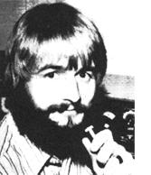
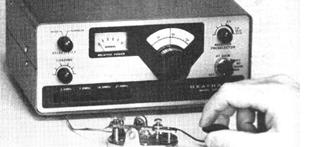

Copthorne Macdonald is the inventor of slow-scan television... a method of amateur radio transmission that allows ham operators to both hear and see each other during shortwave broadcasts.
Many of us none-too-flush MOTHER readers have asked, "How can 1 put a ham radio station on the air at the lowest possible cost?" The answer is simple: Buy a low-cost, code-only transceiver.
As you'll recall from our last column ("Getting a Ham License", page 44 of MOTHER N0. 46), beginning hams-that is, amateur radio operators who hold Novice or Technician Class licenses -must use Morse code when they communicate in the "long distance" HF (high frequency) bands . . . they cannot transmit voice. This limitation !s actually a bless. ing, since code is less subject to interference from other stations, covers more miles per watt of transmitter power, and requires simpler, less expensive equipment than voice. (Many experienced hams, of course, prefer code to voice for these reasons.)
Just how expensive is "less expensive"? In the case of the Heathkit HW-8 low-power, code-only transceiver kit, it's about $130. While you can listen to some voice stations with the HW-8, the set was basically designed for good CW (code) performance only ... and that's why its price is so low. (The Ten-Tec Argonautanother excellent lowpower transceiver -has full voice capability in addition to code ... but its price is 2-112 times as great as the HW-8's: $329!)
With the HW-8, you get continuous tun. ing o7 the lowest 250 kHz of the 3.5-, 7-, 14, and 21-MHz amateur bands ... a transmitter that runs approximately 3.0 watts input and that produces an RF (radio frequency) output of 1.2 to 2.0 watts ... and a very sensitive receiver with a built-in narrow bandwidth filter (which is a big help in separating the particular incoming signal you want from the others on the band).
One particularly nice feature of the HW-8 is that it can be powered by any 12. to 16volt DC source-such as a lantern battery, an automobile battery, or a rechargeable nickelcadmium battery pack -or by a power supply unit fed by 120-volt AC house current. (Healthkit's HWA-7-1 AC power supply kit sells separately for $14.95 plus shipping.) The HW-8's compatibility with battery power-coupled with its small size (9-114" X 8-112" X 4-1/4") and light weight (four pounds)-make it ideal for emergency and backpack use.
"OK," you're saying. "But two watts isn't very much power. Will I be able to contact anyone?" You bet you will! A two-watt CW signal-if launched into space by the proper antenna-will amaze you again and again with what it can do. If you can somehow manage to string up a full-sized wire antenna (such as a half. wave "dipole" or "inverted-V") in an area fairly clear of buildings and trees, at a height of 30 feet or more above ground. most of your two watts will get radiated. On the other hand, if your antenna must be much of a compromise . . . you'd best save your pennies for a higherpowered rig. (Some details of antenna design and construction are presented in MOTHER NO. 29, pages 47-48. Additional information can be found in the Radio Amateur's Handbook, available at the local library or for $7.50 ppd. from the American Radio Relay League, 225 Main St., Newington. Conn. 06111.)
Strong interfering signals are by far the biggest threat to low-power communication. I'm happy, though, to report that the HW8's narrow filter, and its ability to be tuned to any frequency in the CW portion of the band, help to minimize the problem by allowing you to operate in the spaces between the loud signals.
Of course, you can avoid a good deal of interference simply by operating during the less-popular time segments, such as 9:00 a.m. to 5:00 p.m. weekdays, and late at night. The 3.5 MHz band is good for daytime communication with friends up to 200 miles away, and the 7 MHz band is fine for daytime distances of 200 to 600 miles. At night on these bands (and during the day on 14 and 21 MHz), you can communicate across even greater distances, although with less reliability. (I did, however, manage to contact England, Sicily, and Yugoslavia during my first two hours of operation on 14 MHz.)
You may be wondering-and rightly so -if the HW-8 kit is hard to build. All I can say is, when I constructed mine I went slowly and carefully, following the stepby-step instructions given in the assembly manual .. . and at the end of 25 hours, I had a finished unit that worked 100% as advertised. (Of course, 1 rather enjoy kitbuilding. I've come to see it as an exercise in spiritual and psychological growth .. . since concentration, mindfulness, patience, faith. and the willingness to work now for a future reward are all requiredand cultivated-in the process of completing the kit.) Final adjustment of the set requires access to a calibrated receiver and an RF voltmeter . . . items that many hams and radio service technicians have.
Full technical specs for the HW-8 transceiver and complete ordering information can be found in the Heathkit catalog. Write: Heath Company, Dept. TMEN, Benton Harbor, Mich. 49022.
Peace.Cop Macdonald (VE1BFL) 99 Fitzroy St.Charlottetown Prince Edward Island Canada CIA 1 R6
New Directions Radio is an international network of radio amateurs concerned with those ways of using ham radio (and related modes of communicating) that promote our own growth as individuals, and which we perceive as helping to create a more aware, more caring, and more responsible human society. We encourage all who share these interests to work with us. A current schedule of on-the-air activities is included in each issue of the bi-monthly New Directions Roundtable Newsletter published by Randy Brink (WA7BKR) and "Bo" Bogardus (W6HSE) as a service to the rest of us. Send one 13t stamp for each issue desired to: Randy Brink, Rt. 2, Box 3018, Port Orchard, Washington 98366.
|
 Photo by: COPTHORNE MACDONALD Heathkit's $130 HW-8 transceiver: lots of performance for the money |
 |
|